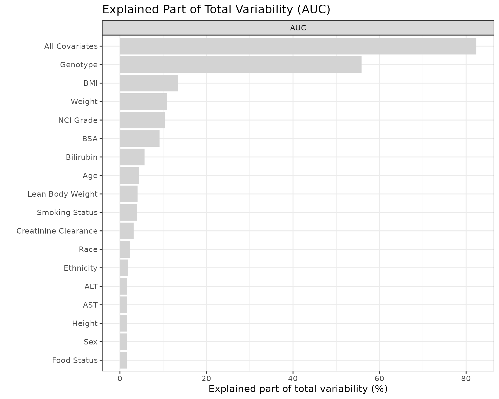
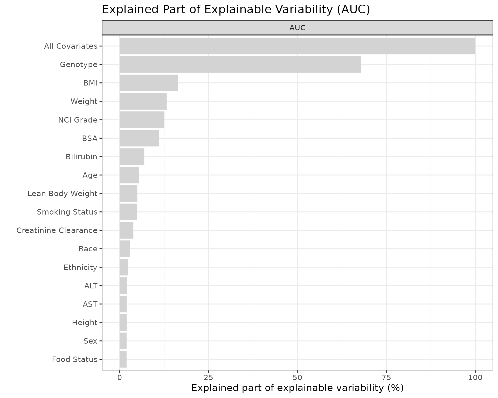

3. Deep Dive: Explained Variability
PMXFrem Development Team
Part3-deep-dive-explained-variability.RmdIntroduction
This vignette explains how to use the PMXFrem package to visualize the degree to which covariates manage to explain variability in the parameters of interest.
The workflow is divided into five logical steps:
- Pre-requisite Setup: Loading models and datasets.
- Covariate Scenarios: Defining the specific covariate combinations to isolate.
- Parameter Function Definition: Writing the structural equations to evaluate.
- Computing Explained Variability: Deriving the variance metrics using specific integration methods.
- Visualization: Rendering the explained variability bar plots.
1. Setting up the Pre-requisite
Load the package and identify which NONMEM FREM run is going to be used.
library(PMXFrem)
library(ggplot2)
library(dplyr)
library(data.table)
# One theme for every figure below
set.seed(865765)
theme_set(theme_bw(base_size = 14))
# Specify the name of the FREM run and collect file paths
runname <- "run31"
modDevDir <- system.file("extdata/SimNeb", package = "PMXFrem")
fremFiles <- getFileNames(modName = runname, modDevDir = modDevDir)
dfData <- fread(system.file("extdata/SimNeb/DAT-2-MI-PMX-2-onlyTYPE2-new.csv", package = "PMXFrem"), data.table = FALSE) %>%
distinct(ID, .keep_all = TRUE)2. Defining the Covariate Scenarios
setupDfCovsEV() builds the covariate matrix from the model, one row per covariate.
dfCovs is read differently here than in a Forest plot. In a Forest plot, dfCovs dictates the exact numerical covariate values to visualize (e.g., WT = 115). For explained variability, dfCovs acts purely as an indicator matrix for the FREM covariates. For these covariates, the actual numerical value assigned does not impact the calculation; setting it to anything other than the missing covariate indicator (typically -99) simply flags which covariates should be actively evaluated for that specific scenario row.
FFEM covariates work differently. A covariate outside the FREM matrix, such as FOOD, is read by the parameter function itself from dfrow, and where that value comes from depends on type:
-
Types 1, 2 and 3 use each subject’s own value from
data. The value indfCovsis not used. -
Type 0 uses the first row of
dfCovsfor every calculation.
In a covariate row, dfrow holds only the covariates that are not -99 in that row. A covariate passed as conditionalCovs is set to 1 in every row, which is what makes it conditional: each FREM covariate’s row then reports what that covariate explains with FOOD in the model. Its own contribution is part of every row, so those rows are not comparable with the FOOD row. The FREM covariates themselves are still isolated one row at a time, and the function must still fall back to the baseline effect when a column is missing (Section 3).
# Build the covariate matrix; FOOD is on in every row
dfCovs <- setupDfCovsEV(
modFileName = fremFiles$mod,
conditionalCovs = c("FOOD")
)
# Define the exact names corresponding to the rows in dfCovs
cstrCovariates <- c("All", names(dfCovs))3. The Parameter Function
getExplainedVar() needs a function that returns the parameters to decompose, given the model’s thetas, the FREM covariate coefficients and a set of etas. Unlike the Forest plot case, it must take etas: the whole point is to integrate over the structural variability.
createFREMParamFunction() writes that function from the model’s own $PK, so the algebra is not retyped here and cannot drift away from the control stream:
gen <- createFREMParamFunction(
fremModel = fremFiles$mod,
parameters = c("CL", "FREL", "V", "MAT"),
secondary = list(AUC = "80 / (CL / FREL)"),
quiet = TRUE
)
paramFunction <- eval(parse(text = gen$code))
functionListName <- gen$functionListName
functionListName
#> [1] "CL" "FREL" "V" "MAT" "AUC"AUC is a secondary parameter. The 80 mg dose it is taken over is a property of the question being asked rather than of $PK, so it is supplied at the call site; the Secondary Parameters deep dive covers that in full.
The result is source text, and worth reading against the control stream before it is used. verifyFREMParamFunction() is the mechanical half of that check: it compares the generated function with the FFEM version of the same model and confirms that each parameter’s covariate coefficient and eta land where the model says they do.
verifyFREMParamFunction(gen, ffemModel = file.path(modDevDir, "run31max1-2.mod"))FFEM covariates are handled for you. FOOD is part of this model’s $PK but not of its FREM covariate matrix, so the generated function carries it - including what to do when dfrow has no FOOD column, which is the case in every covariate row that is not its own. The reference comes from the control stream, here the branch PsN marks ; Most common. Written by hand, that fallback is yours to get right: a function that reads dfrow$FOOD where the column is absent gets NULL, and getExplainedVar() stops rather than silently dropping the parameter.
4. Computing Explained Variability
The getExplainedVar() function computes the total and explained variability. The variability can be related to the total variability in the parameter (\(TOTVAR\)) or the total covariate variability in the parameter (\(TOTCOVVAR\)).
The dfres output contains three main metrics:
- \(TOTVAR\): The total variance, calculated using the Delta method (Type 0), EBEs (Type 1), or \(\eta\) samples (Type 2, 3).
- \(TOTCOVVAR\): Calculated using all covariates with \(\eta=0\), across all observed covariate values.
- \(COVVAR\): Calculated with one (or a combination) of covariates, setting \(\eta=0\).
Calculation Methods (type)
The methodology is dictated by the type argument, and each has distinct mathematical properties:
- Type 0 (Delta Method): Based on omega calculations. It is fast, but a first-order approximation.
- Type 1 (EBEs): Uses Empirical Bayes Estimates. It is subject to \(\eta\) shrinkage but acknowledges individual information richness.
- Type 2 (\(\eta\) Samples): Uses \(\eta\) samples and integrates over observed FFEM covariates. Useful if the model contains non-FREM covariates.
- Type 3 (\(\eta\) Samples Optimized): Similar to Type 2 but does not acknowledge FFEM covariates, making it significantly faster.
Note: With every type, the variability explained by the single covariates need not add up to the variability explained by all of them together: correlated covariates share explained variability. With Types 1, 2, and 3, a single covariate can even explain more than all covariates combined (i.e., > 100%) due to parameter correlations and structural non-linearities.
dfres <- getExplainedVar(
type = 2,
data = dfData,
dfCovs = dfCovs,
functionList = list(paramFunction),
functionListName = functionListName,
cstrCovariates = cstrCovariates,
modDevDir = modDevDir,
modName = runname,
ncores = 1,
numETASamples = 100,
quiet = TRUE,
seed = 123
)numNonFREMThetas and numSkipOm are not passed: when the FREM model is located through modName / modDevDir (or runno), getExplainedVar() derives them – and covNames – from the model and its .ext via fremModelInfo(). Supply them explicitly only to override the derived values.
5. Visualization
We plot the results using plotExplainedVar(). To ensure reproducibility and prevent silent misalignment, we map our labels using a programmatic dictionary.
# 1. Map the covariate names to the labels for the plot
label_map <- c(
"All" = "All Covariates", "AGE" = "Age", "ALT" = "ALT", "AST" = "AST",
"BILI" = "Bilirubin", "BMI" = "BMI", "BSA" = "BSA", "CRCL" = "Creatinine Clearance",
"ETHNIC" = "Ethnicity", "GENO2" = "Genotype", "HT" = "Height", "LBWT" = "Lean Body Weight",
"NCIL" = "NCI Grade", "RACEL" = "Race", "SEX" = "Sex", "SMOK" = "Smoking Status",
"WT" = "Weight", "FOOD" = "Food Status"
)
# 2. Safely translate cstrCovariates into clean labels
mapped_labels <- unname(sapply(cstrCovariates, function(x) {
ifelse(x %in% names(label_map), label_map[[x]], x)
}))
# 3. Plot Total Explained Variability (maxVar = 1)
# Visualizes the fraction: 100 * (COVVAR / TOTVAR)
plotExplainedVar(
dfres,
parameters = "AUC",
maxVar = 1,
covariateLabels = mapped_labels
) + labs(title = "Explained Part of Total Variability (AUC)")
# 4. Plot Proportion of Explainable Variability (maxVar = 2)
# Visualizes the fraction: 100 * (COVVAR / TOTCOVVAR)
plotExplainedVar(
dfres,
parameters = "AUC",
maxVar = 2,
covariateLabels = mapped_labels
) + labs(title = "Explained Part of Explainable Variability (AUC)")